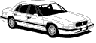

|

LINKS TO COLUMNS
2002
July (eyes in the dark)
September (tyre grip, acceleration, how to be a speed camera)
October (motorway noise)
November (travelling in comfort)
2003
January (over-working the brain)
February (lighting up)
March (lighting up ' continued)
April (eye, brain and the road ahead)
May (tyres and mileages)
June (speedos and other meters)
July (eye, brain and the road ahead ' continued)
September (doctors' surgeries and motorway queues)
October (writing from Ireland)
November (position, speed, acceleration sense)
2004
January (door pillars, blind spots, rear-view mirrors)
February (shuttered lamps, black ice, invisible horses)
March (now you see it, now you don't)
April (turning wheel-nuts and corners)
May (roundabouts, M4 sightings, signs in pairs)
June (John Dunlop, long molecules, astonishing adhesion)
July (lessons in staying awake)
September (headaches, Moir' patterns, road layouts)
October (what's your speed?)
November (losing sleep ' twice a year)
2005
January (questions, questions)
February (what's your speed? ' continued)
March (steering a straight line)
April (the force of habit)
May (from one car to the next)
June (reacting to amber)
July (road markings and surfaces)
September (stopping within the distance)
October (trouble with washer nozzles, tax discs, parking signs)
November (stopping within the distance ' continued)
2006
January (filling to the brim, air-bag safety, spare specs in Spain)
February (the great trunk roads)
March (all sorts of energy)
April (all sorts of energy ' continued)
May (ideas for your safety)
June (sliding hither and thither)
July (silliness and common sense)
September (potential energy, green cars, high technology)
October (don't be blind to blindness)
November (anticipating the 2007 Highway Code)
2007
January (other drivers ' oncoming, on roundabouts, on your tail)
February (Beirut traffic-lights, fading road-signs, the Highway Code still awaited)
March (looking behind you)
April (muddled mathematics, scattered sunlight)
May (wasteful headlights, doubtful percentages, unhelpful indicators)
June (anniversary thoughts)
July (hazard, risk and accident)
September (learning from Irish experience)
October (astronomical distances, safe steering)
November (cutting the new and bigger Highway Code down to size)
2008
January (seeing after dark, handling jump-leads, buying a starter-pack)
February (from 0 to 60, from sidelights to headlights, from England to Wales)
March (seven sorts of sense)
April (seeing clearly and not so clearly)
May (sheep, horses and nightmares)
June (a word beginning with m)
July (bottle-necks, pillow-humps, cat's-eyes, traffic-lights)
September (speeding up and slowing down)
October (all in the mind)
November (instant flashing, French thinking, careless overtaking)
2009
January (signs of blue)
February (light-emitting diodes, red-light discipline, upside-down arrows)
March (the keys to good driving)
April (old cars, new directions)
May (gearing up for the journey)
June (hatching, entering, exiting, escaping)
July (my next car could be cruise controlled...)
September (silly ideas about speed limits)
October (induced oscillations, overlooked hazards, a corrected sign)
November (deceleration sense, auditory nonsense)
2010
January (hatching to the left of us...)
February (things that might surprise you)
March (calls and recalls)
April (first cars and fast cars)
May (stereoscopic sights)
June (la photo du jour)
July (legionnaires and footballers)
September (up at the limit, down on the ground)
October (failing to pass, failing to steer, failing to reverse)
November (accelerating on the spot, expanding on the map, growing on the lip)
2011
January (winter grip, Christmas gloom, electric anxiety)
February (coasting to a halt)
March (Clarkson by moonlight)
April (electric cars ' charging ahead)
May (witness statements, laid-back tricycles, stopping distances)
June (getting ready to board a road train)
July (arriving home, alarming silence, amplifying force)
September (Clarkson on charge, chaos in the sky, confusion over signs)
October (controlling traffic, lowering premiums, reducing horizons)
November (aligning clocks, headlights and percentages)
2012
January (in a class of my own when driving or walking)
February (invisible motorcycles and black spots)
March (John Humphrys, Robbie the Robot, Ludwig van Beethoven)
April (listening to my Corolla and inspecting a driving licence)
May (driving, breath-testing and hanging in France)
June (writing a hundred times)
July (cars evolving into computers, for better or worse)
September (from Glyndebourne to the Paralympics)
October (speeds more or less limited)
November (consequences of punctures and worse)
2013
January (global warming, bodily cooling, new-year resolving)
February (what's to be done when amber shows?)
March (in the market for a car and three fuels)
April (suspicions about electric handbrakes and old tyres)
May (the view from the footpath)
June (a parade of tactics)
July (trading up and saving space)
September (brighter cat's-eyes and a brighter street)
October (assessing risk on the roads and elsewhere)
November (entertaining a visitor)
2014
January (unfazed birds, unrecognized warning-lights, unhelpful percentages)
February (bulb failure and success, fuel consumption and comprehension)
|